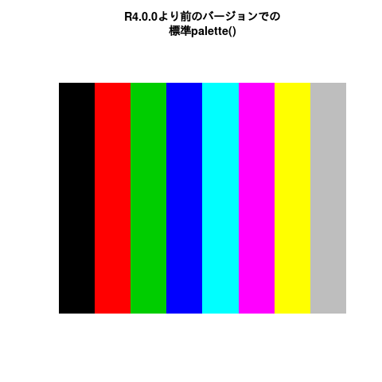
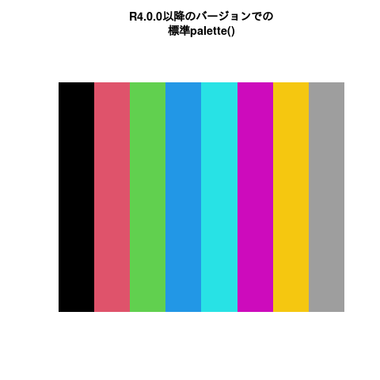

rgb(red = 255, green = 0, blue = 0, maxColorValue = 255)[1] "#FF0000"colors()を実行する
rgb(red = 255, green = 0, blue = 0, maxColorValue = 255)[1] "#FF0000"if (!rlang::is_installed("colorinfo"))
install.packages("colorinfo", repos = c(mm = "https://uribo.r-universe.dev", getOption("repos")))
colorinfo::col_block("#FF0000")▇ #FF0000自分の好きな色をいくつか選んでグラフに使用するのは良いアイデアではありません。 大体の場合、まとまりがない配色になります。
複数の色をセットにしたカラーパレットを使うのが妥当な選択肢となります。 Rでは標準のカラーパレットが用意されています。
R4.0.0以降のバージョンのRでは
# 異なるバージョンのRでの実行結果を示すため、実行はRStudio Cloudで行いました
# R3.6.3
palette()[1] "black" "#DF536B" "#61D04F" "#2297E6" "#28E2E5" "#CD0BBC" "#F5C710"
[8] "gray62" #> c("black", "red", "green3", "blue", "cyan", "magenta", "yellow", "gray")# R4.0.0
palette()[1] "black" "#DF536B" "#61D04F" "#2297E6" "#28E2E5" "#CD0BBC" "#F5C710"
[8] "gray62" #> c("black", "#DF536B", "#61D04F", "#2297E6", "#28E2E5", "#CD0BBC", "#F5C710", "gray62")

https://github.com/malcolmbarrett/ggokabeito
岡部・伊藤スケール
https://github.com/clauswilke/colorblindr
シュミレートすることができます
色を減らす、色を使わない選択肢も心に留めておくと良いでしょう。
gray(0)が黒、gray(1)が白の指定となり、間の値を実数値で指定することでグレースケールに対応できます。